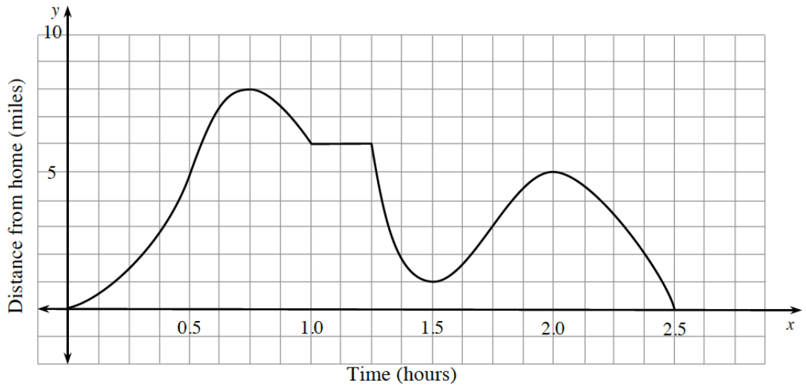
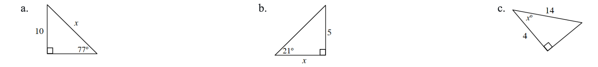

.figure-full image option. Homework Help text omitted. Figure filenames now use hyphens. Code comments included for easier editing.One day Riley decides to take a scenic drive. The graph below represents Riley’s trip.
Write a story that matches the graph. Be sure to include units in your story.
Consider Riley’s distance from home, using the graph from problem 2-1 as you answer the following questions. Estimate your answers to the nearest \(0.25\).
When is Riley’s distance from home increasing? How is this represented on the graph?
When is Riley’s distance from home decreasing? How is this represented on the graph?
Is Riley’s distance from home ever constant? If yes, explain how you know. If no, describe what the graph would look like if the distance was constant over a period of time.
EXTREMA
Points on a graph that are “high” points or “low” points are called extreme points, or extrema. A local maximum/minimum of a function is the largest/smallest value of the function within a small interval around the extreme point. A global maximum/minimum of a function is the largest/smallest value of the function over its entire domain. The plural of maximum is maxima and the plural of minimum is minima.
Look back at the graph in problem 2-1 representing Riley’s drive. Which points are the maxima? Label each maximum point as local or global. What is happening in Riley’s drive at these points?
Which points are the minima? Label each minimum point as local or global. What is happening in Riley’s drive at these points?
Describe the graph near a local maximum point using the words increasing and decreasing. How is it changing?
Describe the graph near a local minimum point using the words increasing and decreasing. How is it changing?
Sketch a curve that is:
increasing and concave down
increasing and concave up
decreasing and concave down
decreasing and concave up
CURVE SKETCHING
Sketch a curve that increases then decreases. What is the point where a function changes from increasing to decreasing called?
Sketch a curve that decreases then increases. What is the point where a function changes from decreasing to increasing called?
Convert the following radian measures to degrees.
\(\frac { 4 \pi } { 3 }\)
\(\frac { 18 \pi } { 5 }\)
\(4\) radians
Write an equation for \(f^{-1}(x)\) if \(f(x)=\frac{5}{2}x-3\).
As the connected complexity of mathematical concepts evolve, your mathematical knowledge evolves as well. Previous knowledge provides the necessary skills to acquire new learning. If necessary, review the Solving Right Triangles Skill Builder, to strengthen your understanding of this topic.
Calculate the value of \(x\) in each diagram below. (Diagrams not to scale.)
Right triangle labeled as follows: vertical leg, 10, hypotenuse, x, angle opposite vertical leg, 77 degrees.
Right triangle labeled as follows: vertical leg, 5, horizontal leg, x, angle opposite vertical angle. 21 degrees.
Right triangle labeled as follows: short leg, 4, hypotenuse, 14, angle opposite long leg, x degrees.

Solve for \(x\): \(x(2+q)=5x-6(3-q)\)
Algebraically solve each system of equations and state the method you used. Graphically check your answer.
\(y=\frac{1}{2}x+5\)
\(2x+y=10\)
\(2y-3x=7\)
\(-y+2x=-2\)
Simplify each expression.
\(5 \sqrt { 2 } + 3 \sqrt { 7 } - 2 \sqrt { 2 } + 4 \sqrt { 7 }\)
\(4 \sqrt [ 3 ] { 2 } + 5 \sqrt { 2 } - 7 \sqrt [ 3 ] { 2 } + \sqrt { 2 }\)
\(\sqrt { 20 } + \sqrt { 45 }\)
\(3 \sqrt { 12 } - \sqrt { 32 } + \sqrt { 27 } + 2 \sqrt { 8 }\)
Consider the parent function \(f(x)=x^2\).
Graph \(y=f(x)\).
Write an equation for \(f\left(\frac{1}{2}x\right)\). Then sketch a graph of \(y=f\left(\frac{1}{2}x\right)\) and describe the transformation.
Write an equation for \(f(3x)\). Then sketch a graph of \(y=f(3x)\) and describe the transformation.